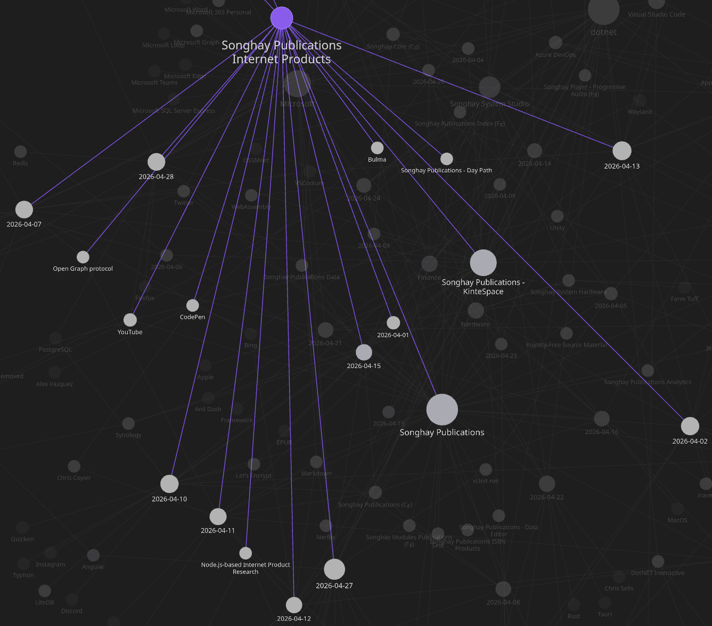
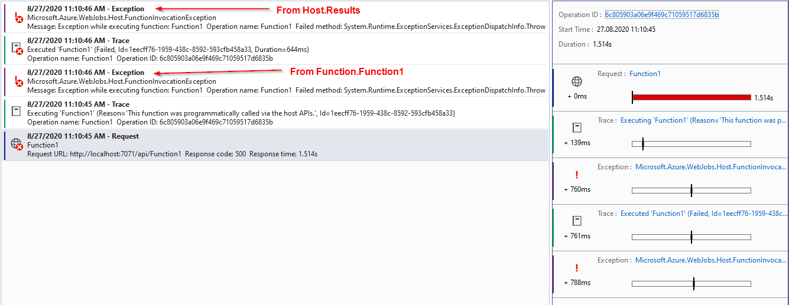
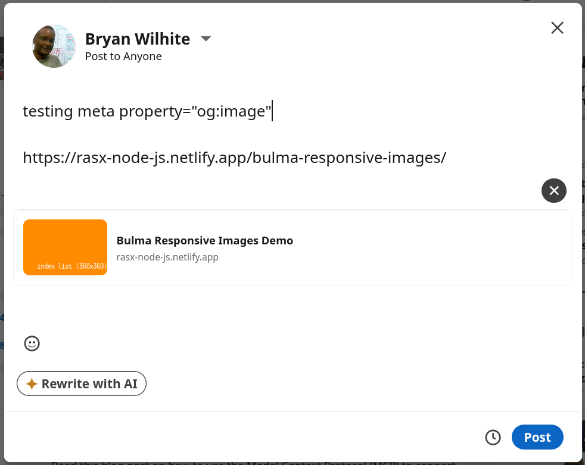
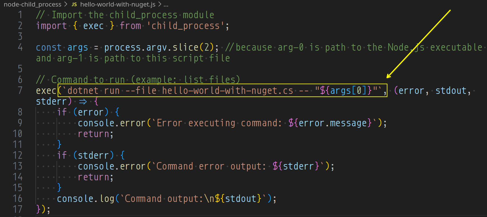

studio status report: 2026-04
Month 04 of 2026 witnessed the continued lack of the re-release of kintespace.com—still almost out the ‘door.’ This month was dominated by two blockers:
- an illness that lasted over a seven days
- errands and meetings required in response to losing my #day-job of over four years
One, bound by logic, would assume that the loss of my #day-job would provide more time to get things done in my Studio. Instead, I spent more time staring to into space, recovering from illness 😐 10 days were spent in month 04 on Internet Publications:

I also managed to release the following NuGet packages for this Studio:
SonghayCore 10.0.0[📦 NuGet ]SonghayCore.xUnit 10.0.0[📦 NuGet ]Songhay.DataAccess 10.0.0and10.0.1[📦 NuGet ]Songhay.Publications 10.0.0and10.0.1[📦 NuGet ]Songhay.Publications.DataAccess 10.0.0and10.0.1[📦 NuGet ]
This Studio-wide upgrade to .NET 10 was overdue and could no longer be delayed. Moreover, .NET 10 has new feature, “file-based apps,” that allows eleventy to call out to .NET Publications code via the child_process module [📖 docs ]. This discovery maximizes the flexibility of eleventy pipelines removing a great number of conceptual and psychological boundaries in this Studio.
Selected notes of the month follow:
Obsidian: another sweep through plugins 🧹😐
plugins that try to replace Jupyter Notebooks
- Obsidian Code Emitter (explicitly references Jupyter; depends on third-party APIs to execute code)
- Obsidian Execute Code Plugin (mentioned on 2022-11-26#Obsidian Obsidian Execute Code Plugin warns me about Linux snap packages)
- obsidian-functionplot
- Embed Code File
- Mermaid Tools for Obsidian.md (“adds a toolbar with common Mermaid.js elements”)
- Numerals Obsidian Plugin (“an advanced calculator inside a math code block”)
- ACE CODE EDITOR (based on the Ace code editor)
- Obsidian VSCode Editor (“based on Monaco Editor (VSCode Editor kernel)”)
- Terminal for Obsidian (mentioned on 2024-07-09#yes, Obsidian can be used as a commanding platform)
- Obsidian RubyWasm Plugin
other awesome picks
- Local REST API for Obsidian
- Notes Explorer
- Obsidian Unicode Search
- Markdown Tree plugin (emulates the Linux tree command)
Publications: “Why the heck are we still using Markdown??”
We don’t know what we want.
Do we want UI? Do we want a programming language? We don’t know. The only reason feature creep exists is because of unclear specifications.
You want a MINIMAL easily legible markup language, you have markdown. Simple as that right?
…
In markdown you can write a bold in different ways.
**bold**,__bold__,<b>bold</b>are some of the ways a valid bold can be written. And these are for commonmark. If you’re using something which isn’t marketing itself as “CommonMark™ Compliant®©” You can very well encounter valid stuff that produce the same input. Like:
_*bold*_*_bold*__*bold_**_bold_*Truly magnificent.
Songhay Core (C♯): extensive breaking changes in JsonElementExtensions 🔨🔥
The following renaming is happening in JsonElementExtensions:
- every member that returns a nullable will be suffixed with
*OrNullwhich is a functional but personal reminder that C# lacks an in-builtResult<_,_>type - the
ToScalarValueoverloads will be renamed toToValueTypeOrNullto reduce the use of the word*Scalar* - the
ToObjectoverloads will be renamed toToInstanceOrNullto use the word*Instance*to allude to reference types
https://github.com/BryanWilhite/SonghayCore/issues/191
Songhay Core (C♯): consider removing object-boxing from the signatures of XmlUtility methods #to-do 😐🔨
object should be removed from the signatures of:
GetNodeValue(consider marking obsolete because it is a shallow wrapper forGetNavigableNode)GetNodeValueAndParse<T>
https://github.com/BryanWilhite/SonghayCore/issues/192
Jeffrey Snover: “Microsoft Hasn’t Had a Coherent GUI Strategy Since Petzold”
In 1988, Charles Petzold published Programming Windows. 852 pages. Win16 API in C. And for all its bulk, it represented something remarkable: a single, coherent, authoritative answer to how you write a Windows application. In the business, we call that a ‘strategy’.
…
What happened next is a masterclass in how a company with brilliant people and enormous resources can produce a thirty-year boof-a-rama by optimizing for the wrong things. AKA Brillant people doing stupid things.
…
Silverlight wasn’t killed by technical failure. The technology was fine. It was killed by a business strategy decision, and developers were the last to know.
Remember that pattern. We’ll see it again.
—“Microsoft Hasn’t Had a Coherent GUI Strategy Since Petzold”

Application Insights: “Exceptions sent to AppInsights twice” #day-job 😐
It’s official—and still not fixed:
When a function throws an exception, that exception is shown once in the console but is logged twice to AppInsights (testing that locally in Visual Studio) with different categories: Host.Results and Function.Function1.

Internet Products: testing meta property="og:image" (Open Graph protocol metadata)
It’s working without any Twitter stuff:

eleventy: the need to run dotnet file-based apps from Node.js might be real 😐
According to Bing AI responding to the prompt, run command line from nodejs:
You can run command-line commands from Node.js using the built-in
child_processmodule.There are two main approaches:
exec— runs a command and buffers the entire output (good for short outputs).spawn— streams output as it’s produced (better for large outputs or long-running processes).
exec code sample from Bing:
// Import the child_process module
const { exec } = require('child_process');
// Command to run (example: list files)
exec('ls -la', (error, stdout, stderr) => {
if (error) {
console.error(`Error executing command: ${error.message}`);
return;
}
if (stderr) {
console.error(`Command error output: ${stderr}`);
return;
}
console.log(`Command output:\n${stdout}`);
});
spawn example:
const { spawn } = require('child_process');
// Spawn a process (example: ping google.com)
const child = spawn('ping', ['-c', '4', 'google.com']);
// Handle standard output
child.stdout.on('data', (data) => {
console.log(`Output: ${data}`);
});
// Handle standard error
child.stderr.on('data', (data) => {
console.error(`Error: ${data}`);
});
// Handle process exit
child.on('close', (code) => {
console.log(`Process exited with code ${code}`);
});
I look forward (finally) to seeing that something like this:
dotnet run file.cs -- arg1 arg2
…called with ease from the eleventy context in Node.js.
eleventy: “The End of Eleventy”
Who uses 11ty? NASA, CERN, the TC39 committee, W3C, Google, Microsoft, Mozilla, Apache, freeCodeCamp, to name a few. The A11y Project launched with Eleventy 1.0 and its lead developer Eric Bailey noted that nearly three years later, the site could still install and run from a cold start with no complications.
Leatherman was initially hired by Netlify to work on Eleventy full-time, but in September 2024, 11ty moved to Font Awesome, with Leatherman joining their team. Now, in 2026, Eleventy is "Build Awesome", angled as the all-in-one site builder for Font Awesome and Web Awesome. But why?
…
My point of writing this is that the companies looking to monetize are far too focused on creating high-quality tools instead of focusing on doing the work and research into the "why". Into communicating the philosophy of SSGs in a way that would make them sincerely enticing long-term to non-technical people.
Songhay System Studio: “Clean Architecture vs Hexagonal Architecture”
Both patterns enforce the same fundamental rule: business logic must not depend on infrastructure.
In both:
- The domain (entities, business rules, use cases) sits at the centre
- Infrastructure (databases, HTTP, messaging) sits at the edge
- The domain communicates with infrastructure through interfaces, never directly
- Swapping infrastructure — changing your database, your messaging platform, your delivery mechanism — should not require touching business logic
If you understand one deeply, the other will feel familiar.
Node.js-based Internet Product Research: I have verified that child_process works with dotnet run --file 😐✅
Following up the speculation from earlier this month:

See “How To Handle Command-line Arguments in Node.js Scripts” 📖
open pull requests on GitHub 🐙🐈
https://github.com/BryanWilhite/SonghayCore/pull/187- https://github.com/BryanWilhite/Songhay.HelloWorlds.Activities/pull/14
- https://github.com/BryanWilhite/dotnet-core/pull/67
sketching out development projects
upgradeSonghayCore,Songhay.Publications,Songhay.DataAccess, etc. to .NET 10 📦🔝- consider using Lerna to coordinate the two levels of
npmscripts 🧠👟 - use a Jupyter Notebook to track finding and changing Amazon links to open source links 📓⚙
- use a Jupyter Notebook to convert flickr links to Publications (responsive image) links 📓⚙
- establish
DataAccesslogic for Obsidian markdown metadata 🔨✨ - establish
DataAccesslogic for Index data, including adding and removing Obsidian documents (and Segments) 🔨✨ - package
DataAccesslogic in*Shellproject fornpmscripting 🚜✨ - convert rasx() context repo to the relevant conventions shown in the diagram above 🔨🚜
- retire the old
kinte-spacerepo for kintespace.com 🚜🧊 - convert Songhay Day Path Blog repo to the relevant conventions shown in the diagram above 🔨🚜
- re-release Songhay Dashboard by updating its repo to the relevant conventions shown in the diagram above 🔨🚜
- start development of Songhay Publications Index (F♯) experience for WebAssembly 🍱✨
- start development of Songhay Publications - Data Editor to establish a GUI for
*Shelland provide visualizations and interactions for Publications data 🍱✨